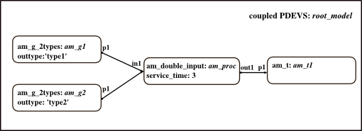

Initialization Script: Testcase two outputs to one input
Two generators generate workpieces either of type1 or type2. Processing block has one input and needs to decide of what type incoming WP is. Two workpieces can arrive at the same time at the same input port. A transducer counts completed workpieces.
Contents
Basic models are take from folder DEVSPATH/01-modelbase/2-outputs-to-1-input.
Call: init_2_out_1_in
File: DEVSPATH/02-examples/discrete/2-outputs-to-1-input/init_2_out_1_in.m

Model Structure
Preparation
close all; clear all; clear classes;
%clc; global SIMUSTOP % to stop simulation by condition SIMUSTOP = 0; global HYBRID HYBRID = 0; % it's a pure discrete, not a hybrid model elapsed = 0;
Create the Model
Atomic models' classes: am_g_2types, am_double_input, am_t
% Instantiate two atomic models generator, one generating workpieces of % type one, the other of type two. Intergeneration times are passed as % system parameters. interarrival_time1 = 1; inistates1 = struct('sigma',interarrival_time1,'counter',0); am_g1 = am_g_2types('am_g1',inistates1,elapsed,'type1'); interarrival_time2 = 2; inistates2= struct('sigma',interarrival_time2,'counter',0); am_g2 = am_g_2types('am_g2',inistates2,elapsed,'type2'); % Instantiate an atomic model assembling server, that assembles the two types, inistates = struct('phase','passive','sigma',inf,'q1',0,'q2',0); service_time = 3; am_proc=am_double_input('am_proc',inistates,elapsed,service_time); % Instantiate a transducer to count assembled workpieces. inistates = struct('q',0); am_t1 = am_t('am_t1',inistates,elapsed); % Coupled model root_model y_root = {}; x_root = {}; root_model = coupled('root_model',x_root,y_root); addcomponents(root_model,{am_g2,am_g1,am_proc,am_t1}); Zid_root = {'am_g1','p1','am_proc','in1';... 'am_g2','p1','am_proc','in1';... 'am_proc','out1','am_t1','p1';... }; set_Zid(root_model, Zid_root);
Take a look at the model
showall(root_model); Check(root_model); set_debug(root_model,1,fopen('debug.txt','w')); % write simulation messages to file debug.txt set_observe(root_model, 1);% track all state variables in s of atomics %set_debug(root_model, 1); % if you want to get the simulation messages to %std-out
Finally
Done! Now the root_coordinator can be called to simulate the model.
root_model = r_c_discrete(root_model,tstart,tend)
Choose for example tstart = 0, tend = 12
Notice: DEBUG is set to 1, so you get simulation messages. Set DEBUG = 2, if you prefer stepwise simulation, or DEBUG = 3 to keep track of x, y and s of atomics.
After simulation you can take a look at states of all atomics by executing the script plot_and_analyze2out1in.
Commands to initialize, simulate, analyse the example:
>> init_2_out_1_in;
>> root_model = r_c_discrete(root_model,0,12);
>> plot_and_analyze2out1in;
DEVS Tbx Home Examples Modelbase << Back